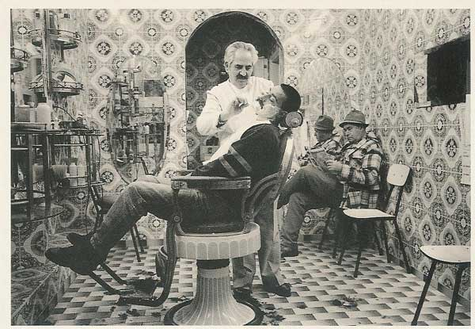

Blitz Barbearia
A primeira organização de barbeiros surgiu em 1096 na França, quando o arcebispo da época proibiu o uso da barba. Assim surgiu o barbeiro cirurgião e o barbeiro dentista, que se espalharam por toda Europa. Desde pessoas mais simples até a realeza frequentavam as barbearias para cuidar da saúde e da aparência.
